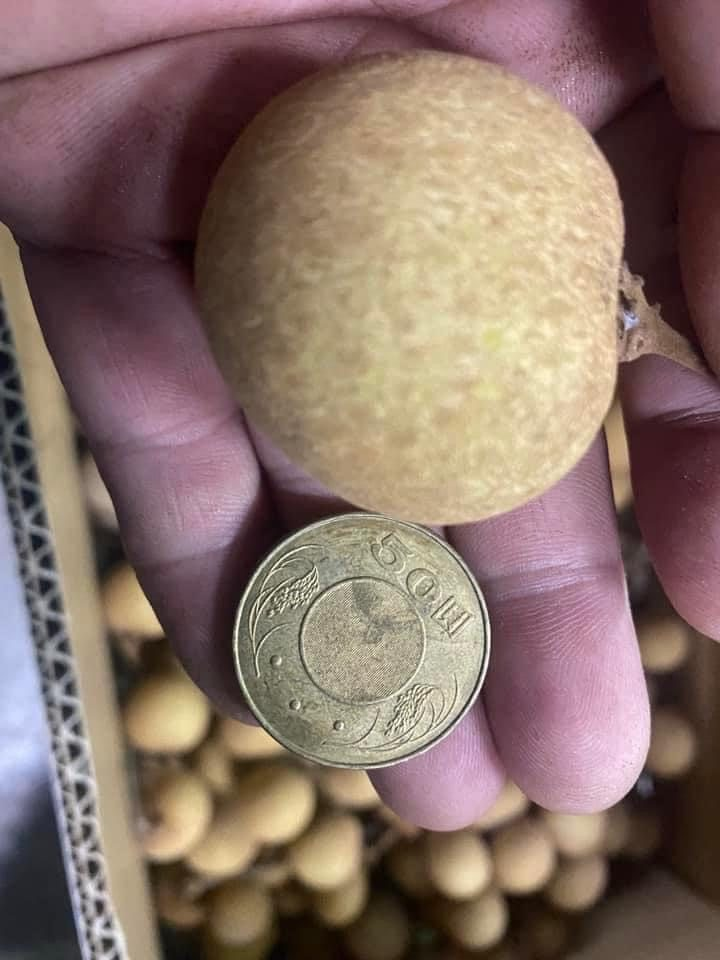
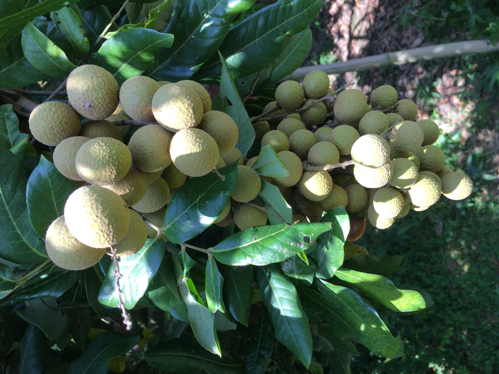
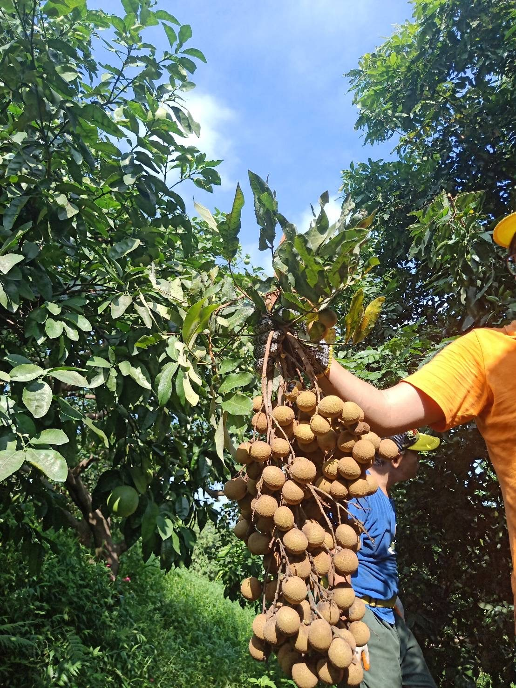
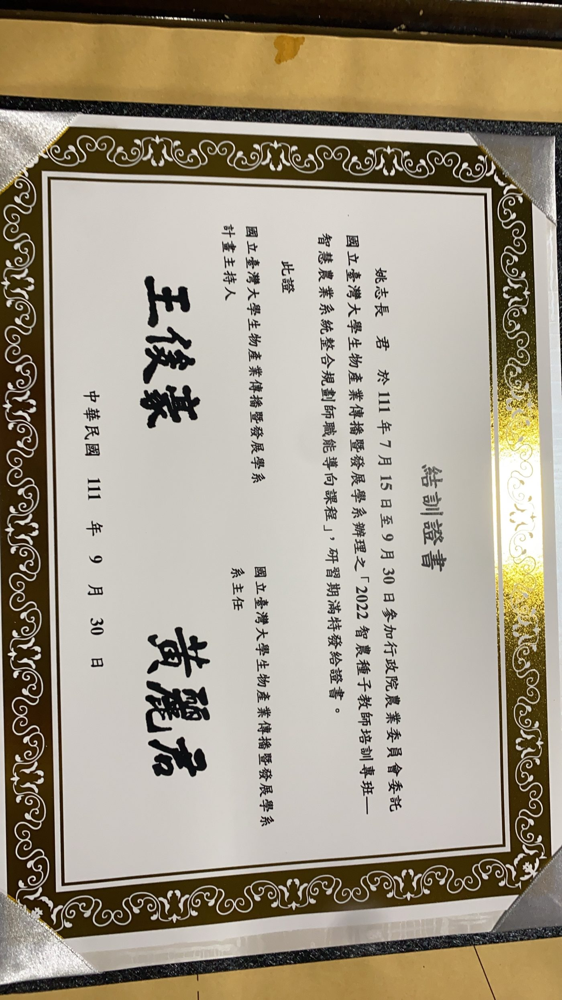
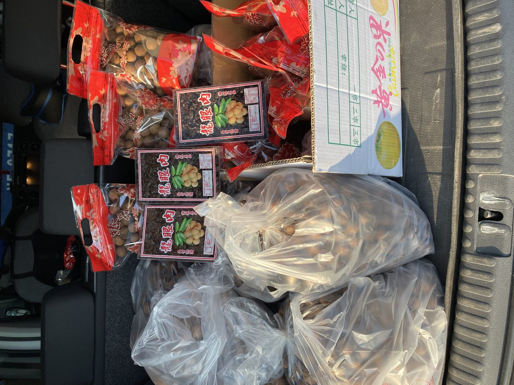

關於我們
三代人的果園時光
林鳳凰果園位於嘉義縣竹崎鄉，家族多年來栽種龍眼、荔枝、香蕉等在地水果。我們近期通過了合作社的創立申請，期望以更完整的組織，把家族對土地的用心分享給更多人。
除了田間的實作經驗，家人也持續參與智慧農業與採後冷鏈技術等相關培訓課程，希望在維持傳統耕作精神的同時，也能用更科學的方式照顧每一顆果實，讓水果從產地到餐桌都保有最好的品質。

產品介紹
當季鮮果
龍眼、荔枝、香蕉依季節輪番登場，每一款都是嘉義竹崎的在地滋味。

龍眼
果園主力作物，主要栽種兩個在地品種：
- 大金剛：果粒碩大飽滿，是宴客送禮的熱門選擇。
- 水貢（潤蒂仔）：在地慣稱「潤蒂仔」，果肉細緻多汁，適合鮮食。



龍眼乾（龍眼肉）
將當季龍眼以傳統工序烘焙、去殼取肉，方便保存也適合日常食用或入菜燉補。
荔枝
果園另一項時令水果，果肉香甜多汁，產季時新鮮直送。詳細品種與照片陸續補充中。
香蕉
全年穩定供應的日常水果，自然熟成、香氣十足。詳細品種與照片陸續補充中。
品質保證
看得見的用心
產銷履歷驗證
龍眼取得台灣良好農業規範（TGAP）產銷履歷驗證，生產過程有跡可循。
農產品生產追溯
加入台灣農產生產追溯系統，掃描追溯碼即可查詢生產資訊，買得安心。
持續進修精進
家人持續參與智慧農業、農產品採後冷鏈技術等專業培訓，精進栽種與保鮮技術。
聯絡我們
歡迎和我們聯繫
想了解產季、訂購方式或合作社相關資訊，歡迎透過以下管道與我們聯繫。
Facebook 粉絲專頁
林鳳凰果園
電話
聯絡方式更新中，敬請期待
LINE
聯絡方式更新中，敬請期待